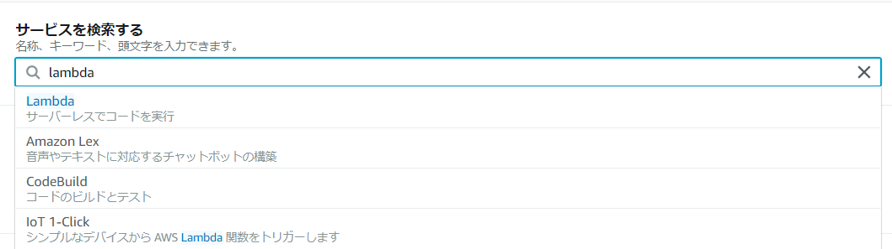
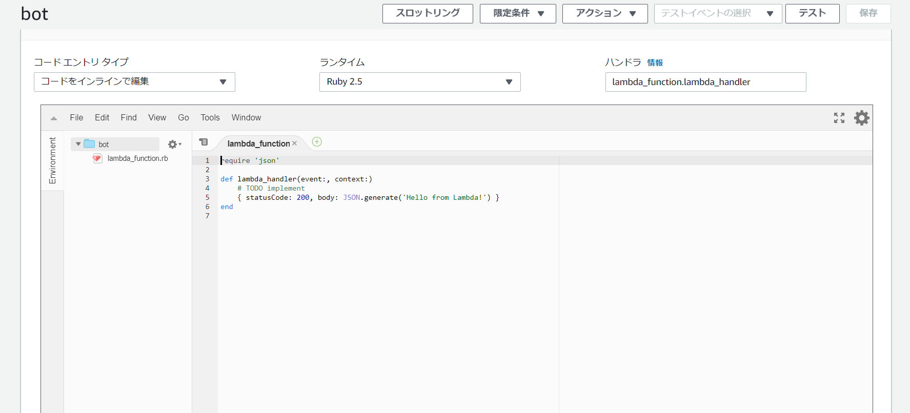
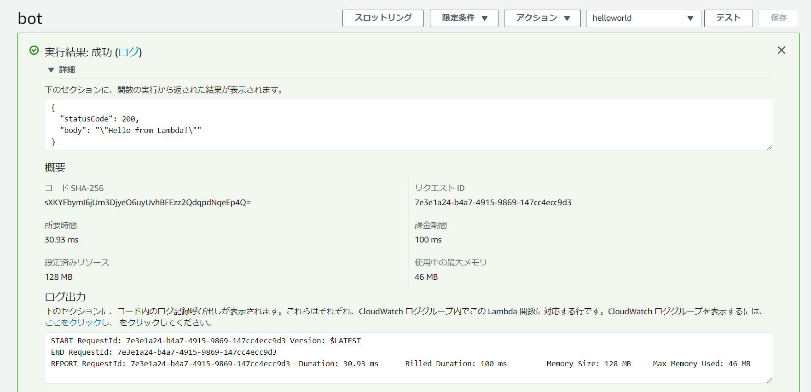
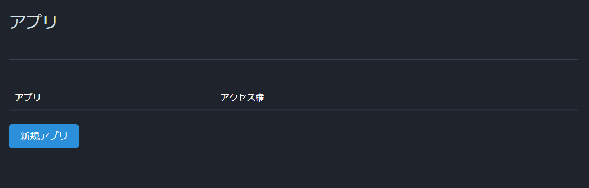
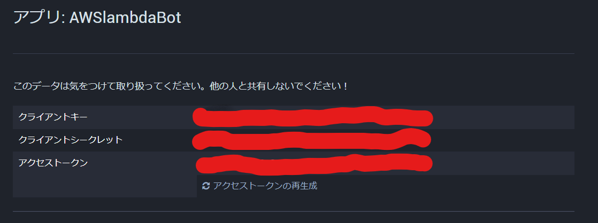
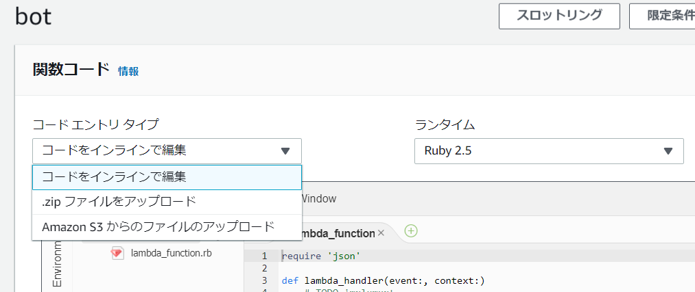
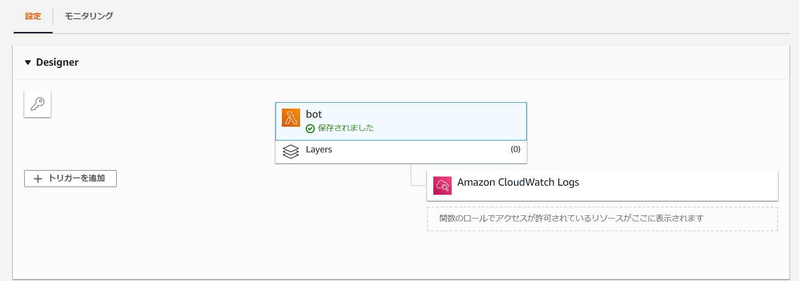
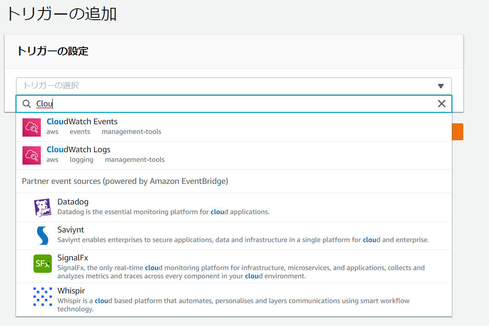

AWS Lambdaで作るサーバーレス Mastodon Bot
初稿：2019年8月18日
はじめに
みなさん、こんにちは。 普段はCreatodonというMastodonサーバーの管理人をしています、S.H.と申します。
今回は、下記のイベントで寄稿した記事に加筆したものをるびまにも寄稿させて頂きました。
分散SNS萬本執筆・販売 執筆者募集中です（公募型アンソロジー）
今回書くものは、以前「#顔面工事」というハッシュタグを拡散するBotを作った際に得たノウハウをまとめたものになります。 下記のリポジトリを見つつ、読み進めるとより楽しめると思います。
S-H-GAMELINKS/face_under_construction
環境
本記事では、以下の環境にてBotを作成しました。
- OS : Windows 10 Pro(WSL/Ubuntu 18.04)
- Ruby : 2.5.5
- エディタ : VSCode 1.36.0
AWS Lambda のRubyランタイムのバージョンが2.5なので、Rubyの2.5系列がインストールされていれば問題ありません。
Mastodonとは？
Mastodonとは分散SNSと呼ばれるものの一つになります。 数年前に日本でもMastodonブームが来たこともあり、ご存知の方もおられるかと思います。
実装としてはバックエンドにRails、フロントエンドにReactが使用されています。 Dockerイメージも公開されており手軽にサーバーを構築できます。
Mastodonなどの分散SNSの魅力は自分でTwitterのようなSNSサービスを立ち上げ、運営することができる点です。 自分のサーバーを構築すればアカウントの凍結などを気にする必要もないですし、
MastodonではActivityPubというプロトコルを使い、他なサーバーとやり取りをすることができます。 その為、別のサーバーのアカウントをフォローできますし、つぶやきなどを見ることもできます。
また他な分散SNSともやり取りをすることができます。 他な分散SNSにはPleromaやMisskeyといったものがあります。それらの分散SNSもActivityPubを使用しています。 その為、それらと相互にフォローしたり、つぶやきをお気に入りしたりということができます。 分かりやすく言えば、TwitterとFacebookで互いにやり取りができるという状態ですね。
ちなみに、海外のRubyistがruby.socialというRubyistのためのサーバーを公開しています。 興味のある方はアカウントを作成してみてはいかがでしょうか？
AWS Lambdaとは？
ご存知の方も多いとは思いますが、念のためAWS Lambdaについて少し解説します。
AWS LambdaとはAmazonが提供しているサービスの一つで、サーバーを意識しなくてもコードを実行する環境を提供するサービスです。 そのためコードを書くことに集中できますし、コードを気軽に本番環境で動かすことができます。
また、AWS Lambdaはコードを実行した分だけの課金となっています。その為、Botなどで定期的にコードを実行するものを作成する際には非常に低コストで済みます。
BotをRubyで作成
それでは、AWS LaambdaでMastodonのハッシュタグをブーストするBotを作っていきます。
なお、AWSへのアカウント作成などは省略させていただきます。
まずは AWS LambdaでHello World!
まず、AWS にログインし、サービスの検索欄から Lambdaを検索します。

Lambdaの管理画面に移動して、関数の作成と書かれているボタンを選択します。

その後、関数作成のフロー画面に移動します。

関数名などを以下のように入力してください。
- 関数名：bot
- ランタイム： Ruby 2.5
入力後、関数の作成をクリックして、関数を作成します。これでAWS Lambdaに関数が作成されます。

関数が作成されると画面が遷移します。遷移後の画面をスクロールすると、関数コードという項目でエディタ画面が見つかります。

そこには既に以下のようなコードが作成されています。
require 'json'
def lambda_handler(event:, context:)
# TODO implement
{ statusCode: 200, body: JSON.generate('Hello from Lambda!') }
end
Hello from Lambda!の部分をHello World!に修正してください。その後、画面上部にあるテストをクリックします。
新しいテストの作成画面が表示されますので、イベント名にhelloworldと入力します。あとは作成をクリックし、テストを作成します。

最後に、再び画面上部にあるテストをクリックします。すると、先ほど作成したテストが実行され、実行結果がログとして表示されます。

MastodonインスタンスでBotのアカウントを作成
Botを作成したいMastodonインスタンスにてBot用のアカウントを作成しましょう。
作成後、ユーザー設定を開きます。

開発タブをクリックします。

新規アプリを作成します

新規で作成するアプリの情報などを記入していきます。

入力後、送信をクリックします。

これで新しいアプリが作成されます。
新しく作成したアプリをクリックします。

アクセストークンを取得します。

以上でMastodon側での設定は完了です。
RubyでBotのコーディング
それでは、Botのコードを書いていきます。
まずは、以下のようにGemfileを作成します。
source "https://rubygems.org"
git_source(:github) {|repo_name| "https://github.com/#{repo_name}" }
# Using Mastodon API
gem 'mastodon-api', '1.1.0'
次に、以下のようにbot.rbを作成します。
load_paths = Dir["/vendor/bundle/ruby/2.5.0/gems/2.5.0/**/lib"]
$LOAD_PATH.unshift(*load_paths)
require "mastodon"
def lambda_handler(event:, context:)
client = Mastodon::REST::Client.new(base_url: URL, bearer_token: ACCESS_TOKEN)
client.hashtag_timeline(HASH_TAG).each do |toot|
if !toot.reblogged? then
response = client.reblog(toot.id)
response = client.favourite(toot.id)
end
end
end
実は、ハッシュタグをブーストするBotはたったこれだけのコードで実装できます。それではコードの内容を解説していきましょう。
まず、最初の二行で外部ライブラリを読み込むためのパスを設定しています。
load_paths = Dir["/vendor/bundle/ruby/2.5.0/gems/2.5.0/**/lib"]
$LOAD_PATH.unshift(*load_paths)
AWS Lambdaではbundlerを使っての外部ライブラリ使用ができません。そのため、ローカルのディレクトリ内にライブラリのファイルを配置する必要があり、上記のコードで読込先を指定しています。
次に、requireを使ってライブラリを読み込みます。
require 'mastodon'
その後、以下のように lambda_handlerというメソッドを定義します。
def lambda_handler(event:, context:)
client = Mastodon::REST::Client.new(base_url: URL, bearer_token: ACCESS_TOKEN)
client.hashtag_timeline(HASH_TAG).each do |toot|
if !toot.reblogged? then
response = client.reblog(toot.id)
response = client.favourite(toot.id)
end
end
end
アクセストークンとインスタンスのURLを使い、Botへのアクセスができるようにします。その後、hashtag_timelineというメソッドにブーストしたいハッシュタグを引数として渡します(ex: “顔面工事”)
すると、指定のハッシュタグをもつ投稿を取得できます。それをeachメソッドで一つずつ繰り返し、既にブースト済みかを判定してからブーストします。
AWS lambdaへデプロイ
それでは作成したBotを AWS Lambdaへとデプロイしていきます。
まず、ターミナルで bundle install –deployment を実行します。
bundle install --path vendor/bundle
実行すると、vendorディレクトリが作成されます。そこに、使用するライブラリのファイルが配置されています。
あとは、bot.rb、vendorディレクトリをzip形式で圧縮します。
AWS Lamndaの先ほど作成したbot関数の画面を開きます。関数コードの項目内に、コードエントリタイプというものがあります。

コードエントリタイプでzipファイルをアップロードを選択します。アップロードをクリックし、先ほど作成したzipファイルをアップロードします。

その後、ハンドラを bot.lambda_handlerに書き換えて保存します。

次に、トリガーを追加という項目がありますので、それを選択します。トリガーの追加画面に切り替わります。

トリガーにはCloud Watch Eventsを使用します。

Cloud Watchと入力すると以下のように検索結果に表示されます。

Cloud Watchを選択し、ルールの部分をクリックして新しいルールを作成します。

新しいルールは以下のようにします。
- ルール名：bot
- ルールの説明：Mastodon Bot用の定期スケジュール
- ルールタイプ：スケジュール式
- スケジュール式下の空欄：rate(1 hour)

各項目を入力後、追加をクリックします。
これで AWS LambdaへBoをデプロイできました！
おわりに
本記事では AWS Lambda を使ったMastodon Botの作成について解説を行いました。
意外と簡単に定期実行のBotは作成できますので、皆さんも是非Botを作成してみてください。
著者について
S.H. (平岡 瞬) Mastodon: @S_H_ blog: ゲームリンクスの徒然なる日常 GitHub: S-H-GAMELINKS
RubyとC++が好きな人。株式会社侍にてRailsとか教えています。 趣味でMastodonの周辺サービスとか色々やってます。